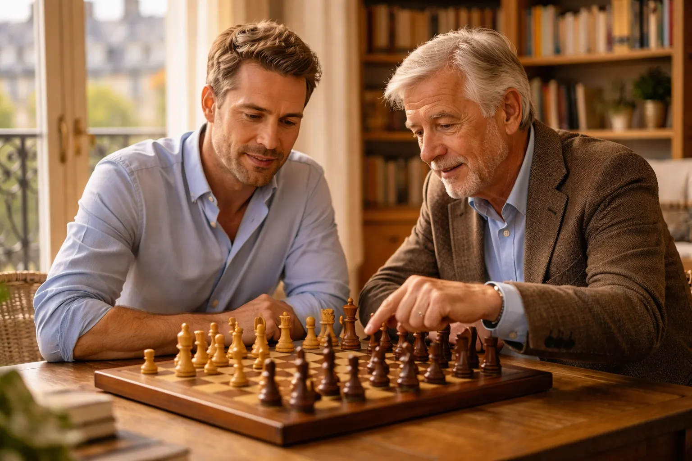

Au sommaire

Pourquoi prendre des cours d'échecs à l'âge adulte
On me pose souvent cette question dans les premières minutes d'un premier cours. Pas sur les règles ou les ouvertures — sur le pourquoi. « Est-ce que ça vaut vraiment le coup ? » Réponse courte : oui, si vous recherchez un loisir exigeant, mesurable et social.
Une activité intellectuelle exigeante
Les échecs ne sont pas qu'un jeu de société sophistiqué. C'est l'un des rares loisirs qui sollicite simultanément votre mémoire, votre logique, votre anticipation et votre gestion émotionnelle. En même temps. À chaque coup.
À nuancer honnêtement : une association statistique ne prouve pas que les échecs protègent le cerveau. Ces travaux portent sur plusieurs loisirs et ne permettent pas d'attribuer un effet médical propre aux échecs.
Ce que ça change concrètement dans votre vie :
- Au travail : meilleure anticipation, prise de décision plus rapide sous pression
- Émotionnellement : vous apprenez à gérer la défaite, à rester calme dans l'adversité
- Cognitivement : la concentration s'améliore — y compris en dehors de l'échiquier
- Socialement : une compétence rare qui ouvre des conversations et des portes
Pourquoi les adultes parisiens se mettent aux échecs en 2026
Dans mes cours, j'observe cinq motivations récurrentes chez mes élèves adultes à Paris :
1. La stimulation intellectuelle
"Mon boulot tourne en automatique, j'ai besoin de me challenger." C'est le profil le plus courant. Cadres, entrepreneurs, médecins : des gens brillants qui ont besoin d'un défi mental qui n'est PAS lié à leur travail.
2. La passion retrouvée
"J'y jouais enfant, j'ai arrêté, j'ai envie de reprendre sérieusement." Excellent profil. Vous avez des intuitions déjà là, enfouies. On les réveille, on les structure. Vous progressez vite.
3. Jouer avec son enfant (ou petit-enfant)
"Mon fils de 12 ans me bat à chaque partie. C'est humiliant." (Je cite textuellement plusieurs de mes élèves.) C'est une motivation formidable — et ce défi se règle en 3-4 mois de travail sérieux.
4. La préparation aux tournois
"Je joue en club depuis 5 ans, je stagne à 1400 Elo, je veux franchir un cap." Le profil du compétiteur qui a besoin d'un regard extérieur pour identifier ses angles morts. J'adore ce profil.
5. L'accomplissement personnel
"Je veux me prouver que je peux maîtriser quelque chose de difficile." Les échecs sont l'une des disciplines où le chemin de progression est mesurable (Elo, puzzles résolus, parties gagnées). Chaque palier franchi = satisfaction réelle.
Les profils d'adultes que Nicolas accompagne
Je ne fais pas de cours "standardisés". Chaque adulte arrive avec son histoire, son niveau, ses objectifs. Voici les quatre profils principaux que j'accompagne — et comment je m'adapte à chacun.
Le débutant complet (jamais joué ou presque)
Vous ne connaissez pas (ou à peine) les règles. Vous avez peut-être essayé de jouer contre un bot et perdu en 10 coups. C'est le point de départ le plus courant — et il n'y a rien de honteux là-dedans.
Ce que je fais avec vous :
- Apprentissage des règles de façon active (on joue, on n'écoute pas une conférence)
- Principes fondamentaux d'ouverture dès le 2e cours
- Puzzles tactiques simples pour développer le "regard" échiquier
- Parties commentées ensemble pour comprendre le raisonnement, pas juste les coups
Si vous vous demandez si vous êtes vraiment "trop vieux" pour commencer, lisez notre guide apprendre les échecs à 30, 40 ou 50 ans. Spoiler : vous ne l'êtes pas.
Le joueur de club (700-1400 Elo)
Vous jouez depuis quelques années. Vous gagnez parfois, vous perdez souvent contre les mêmes adversaires. Vous avez l'impression de stagner sans comprendre pourquoi.
Ce que je fais avec vous :
- Analyse de vos parties récentes pour identifier les patterns d'erreurs
- Travail ciblé sur vos lacunes (souvent : finales et calcul tactique)
- Construction d'un répertoire d'ouvertures cohérent avec votre style de jeu
- Exercices hebdomadaires personnalisés (pas des puzzles génériques, des puzzles pour vous)
La stagnation est normale, mais elle se dépasse. Notre article sur comment surmonter la stagnation aux échecs explique les mécanismes. Un prof vous fait gagner des mois sur ce processus.
Le compétiteur (1400+ Elo)
Vous jouez en tournois. Vous avez un classement FIDE ou FFE. Vous voulez passer un cap précis : 1600, 1800, 2000 Elo.
Ce que je fais avec vous :
- Analyse approfondie de vos parties de tournois (sur chess.com/lichess ou fichier PGN)
- Préparation spécifique contre vos adversaires récurrents
- Travail de haute précision sur les finales (souvent le talon d'Achille des 1400-1700)
- Gestion du temps de réflexion et de la pression psychologique en tournoi
- Accompagnement aux tournois si vous le souhaitez
Le parent qui veut jouer avec son enfant
Votre enfant prend des cours, joue en club, progresse vite. Et vous aimeriez pouvoir partager ça avec lui — vrai duel, pas juste "ah bravo chéri tu es fort".
Ce que je fais avec vous :
- Programme express : 8-10 cours ciblés sur les notions clés
- Focus sur les tactiques de base (vous allez battre votre enfant plus vite que prévu)
- Compréhension du vocabulaire et des concepts qu'il utilise
- Optionnel : séances mixtes parent-enfant pour jouer ensemble
Comment se déroule un cours avec Nicolas
Concrètement, à quoi ressemble une heure de cours ? Pas de blabla théorique pendant 45 minutes. Une séance avec moi, c'est structuré, dense, et on passe à table rapidement.
Le premier cours (celui qui est offert)
C'est un cours d'évaluation et de connaissance mutuelle. Je ne facture pas parce que je veux qu'on parte sur de bonnes bases — pas que vous vous engagiez "à l'aveugle".
Au programme :
- 10 min : Discussion sur votre parcours, vos objectifs, vos contraintes d'agenda
- 15 min : Évaluation de niveau — une partie courte ou quelques puzzles pour voir où vous en êtes
- 30 min : Premier contenu : on ne perd pas de temps, on commence à travailler
- 5 min : Bilan et plan des prochaines séances
À la fin, vous savez exactement où vous en êtes, ce qui va changer, et si on se ressent bien. Zéro pression pour continuer si le feeling n'y est pas.
Une séance type (après le 1er cours)
• 5-10 min — Retour sur la semaine : Avez-vous joué des parties ? Résolu les puzzles que je vous ai donnés ? On commence toujours par un retour pratique, pas par de la théorie froide.
• 15-20 min — Analyse de partie : On prend une de vos parties récentes (chess.com, lichess, ou OTB) et on l'analyse ensemble. Je montre les moments critiques, les alternatives, les principes derrière chaque coup. C'est là que la progression est la plus rapide.
• 20-25 min — Contenu nouveau : Selon le plan de progression : un concept tactique, une structure de pion, une technique de finale, un thème d'ouverture. Toujours illustré par des positions concrètes et un exercice immédiat.
• 10 min — Exercices hebdomadaires : Je vous prépare 5-10 puzzles ou positions à travailler seul avant le prochain cours. Pas des exercices génériques — des exercices calibrés sur vos faiblesses spécifiques du jour.
Ce qui rend mes cours différents
Je peux prétendre que mes cours sont "uniques". Vous avez entendu ça partout. Voici ce qui est concret et vérifiable :
- Analyse de vos vraies parties : Pas des positions de manuel — les VOS erreurs, VOS patterns. Chess.com et lichess me donnent accès à votre historique complet dès le 2e cours.
- Répertoire d'ouvertures personnalisé : Je ne vous impose pas la Sicilienne parce que c'est "objectivement bonne". Je vous construis un répertoire adapté à votre style (positionnel, tactique, solide, agressif).
- Vouvoiement et respect : Vous êtes adulte. Je vous parle comme un adulte. Pas de condescendance, pas de pédagogie infantilisante.
- Disponibilité 7j/7 : Si vous avez une question entre deux cours, vous m'envoyez un message. Je réponds.
- Flexibilité totale : Déplacement à votre domicile (Paris/Versailles) ou visio si Paris décide d'être Paris ce soir-là (grève, embouteillage... vous voyez).
Pour comparer les approches cours en ligne vs présentiel, notre article cours d'échecs en ligne vs présentiel vous donnera tous les éléments de décision.
Tarifs et formules
Soyons directs. Je n'aime pas les tarifs flous ou les "forfaits" qui cachent le prix réel. Voici ce que je propose — et si vous voulez situer ces montants par rapport au marché, j'ai détaillé les prix pratiqués pour un cours d'échecs en France dans un article dédié :
🏠 Cours à domicile (Paris & Versailles) — 50€/heure
Je me déplace chez vous. Vous n'avez aucune contrainte de déplacement. Idéal pour les adultes avec un emploi du temps chargé.
💻 Cours en visio (lichess ou chess.com) — 40€/heure
Aussi efficace que le présentiel pour les niveaux débutant à intermédiaire. Parfait si vous n'êtes pas à Paris, si vous voyagez, ou si le divan est plus confortable que le métro.
🎁 1er cours OFFERT — 0€
Peu importe le format choisi, le premier cours est gratuit. Aucune carte bancaire demandée avant. Pas d'engagement.
Pourquoi ces tarifs sont justifiés
À Paris, les tarifs de cours particuliers d'échecs vont de 25€/h (étudiant en fac, sans expérience pédagogique) à 120€/h (grand maître international). Je me positionne délibérément dans la fourchette "expert avec vraie pédagogie adulte".
Ce que vous obtenez pour 50€/h à domicile :
- ✅ Un professeur 2086 Elo FIDE (Expert — top 2% mondial)
- ✅ Analyse de vos parties avant chaque cours (préparation incluse)
- ✅ Exercices personnalisés entre les séances
- ✅ Répertoire d'ouvertures sur mesure
- ✅ Disponibilité par message entre les cours
- ✅ Accompagnement en tournois (sur demande)
Organisation pratique
- Fréquence recommandée : 1 cours par semaine (idéal) ou 1 cours tous les 15 jours (acceptable)
- Durée standard : 1 heure (possibilité de 1h30 pour les compétiteurs)
- Disponibilité : 7 jours sur 7, incluant weekends et soirées
- Annulation : Prévenir 24h à l'avance — aucun frais, report sans problème
- Zone de déplacement : Tous les arrondissements de Paris + Versailles
- Contact : 06 09 36 56 91 — nicolas.musicki@gmail.com
Si vous vous demandez combien de temps il faut pour progresser vraiment, notre article combien de temps pour devenir bon aux échecs vous donnera des repères honnêtes.
Réservez votre 1er cours offert
Aucun engagement, aucun risque. Juste 1 heure pour voir si ça matche — et commencer à progresser.
Témoignages d'élèves adultes
Je pourrais écrire n'importe quoi ici. Vous méritez du concret.
FAQ — Cours d'échecs adultes à Paris
Peut-on apprendre les échecs à l'âge adulte si on n'y a jamais joué ?
Absolument. Et contrairement à ce qu'on entend parfois, les adultes ont des avantages réels sur les enfants débutants : concentration, discipline, capacité à comprendre des concepts abstraits immédiatement. La progression est différente (moins de "vitesse pure"), mais souvent plus solide. Pour en savoir plus : guide complet pour adultes débutants.
Est-ce qu'un professeur particulier vaut vraiment mieux que les ressources gratuites ?
Un apprentissage autodidacte peut très bien fonctionner, surtout avec des ressources structurées. Son principal inconvénient est l'absence de retour extérieur pour hiérarchiser les erreurs et vérifier que la méthode choisie correspond à votre niveau. Notre analyse professeur vs autodidacte compare les deux approches en détail.
Est-ce que les cours en visio sont aussi efficaces ?
Oui, à partir du moment où on utilise les bons outils. Lichess et chess.com ont des fonctions de partage d'échiquier en temps réel impeccables. J'enseigne en visio depuis 2023 et mes élèves distanciels progressent exactement au même rythme. Pour peser le pour et le contre : cours en ligne vs présentiel, le comparatif complet.
À quelle fréquence faut-il prendre des cours ?
1 cours par semaine est l'idéal pour une progression régulière. 1 cours tous les 15 jours fonctionne bien si vous travaillez entre les séances (puzzles, analyse de parties). En dessous de 2 cours par mois, la progression devient très lente car le cerveau peine à consolider les acquis entre les sessions.
Combien de temps avant de voir des résultats ?
Les premiers résultats visibles (meilleure compréhension du jeu, victoires sur des adversaires qui vous battaient avant) apparaissent généralement après 4 à 8 cours. Une progression Elo mesurable (+100 à +200 points) est typiquement visible après 3 mois de cours hebdomadaires. Pour des repères détaillés : combien de temps pour devenir bon aux échecs.
Je suis senior/retraité, est-ce approprié pour moi ?
Les seniors sont souvent mes élèves les plus réguliers et les plus motivés. Le temps disponible, la patience et la maturité cognitive en font des apprenants excellents. J'ai adapté une approche spécifique pour ce profil : les échecs à la retraite — guide pour seniors.
Comment se passe l'inscription ?
Aucune "inscription" au sens administratif. Vous me contactez (formulaire, téléphone ou email), on échange brièvement sur votre profil et vos disponibilités, et on fixe une date pour le 1er cours gratuit. C'est tout.
Est-ce que vous accompagnez des adultes en tournois ?
Oui. Je peux préparer la partie (ouvertures, analyse de l'adversaire si on a accès à ses parties) et, sur demande, être présent lors de tournois amateurs parisiens. Ce service est discuté au cas par cas selon le niveau et les objectifs.
Comment puis-je vérifier votre niveau ?
Mon profil FIDE est public, numéro 653008898. 2086 Elo au moment de la mise à jour de cet article. Vous pouvez vérifier en temps réel sur le site de la FIDE.
Vous enseignez les bases des règles aux grands débutants ?
Bien sûr. Même si vous ne savez pas comment bouge un cavalier, je m'adapte. C'est même souvent plus simple de partir d'une page blanche — pas de mauvaises habitudes à défaire. Notre guide complet des règles d'échecs peut aussi vous aider à vous préparer avant le premier cours.
Réservez votre premier cours offert
Si vous êtes arrivé jusqu'ici, vous avez probablement déjà pris votre décision. La seule vraie question qui reste : est-ce que Nicolas est le bon prof pour vous ?
La réponse, vous ne pouvez la trouver qu'en essayant. C'est exactement pour ça que le 1er cours est gratuit.
Pas de piège. Pas de carte bancaire. Pas de relance commerciale agressive si vous décidez que ce n'est pas pour vous. Juste une heure pour voir si ça matche — et si oui, une progression qui commence immédiatement.
✅ Évaluation précise de votre niveau réel
✅ Identification de vos points forts et de vos angles morts
✅ Plan de progression personnalisé pour les 3 prochains mois
✅ Un premier contenu concret (on ne perd pas l'heure en "prise de contact")
✅ Une idée claire de ce à quoi ressemblent mes cours
✅ Zéro engagement pour la suite
Prêt à commencer ?
Contactez-moi pour réserver votre 1er cours offert. Je réponds sous 24h, généralement bien moins.
06 09 36 56 91 | nicolas.musicki@gmail.com | Paris & Versailles, 7j/7
Article recommandé
Vous débutez ou reprenez les échecs après des années d'absence ? Ce guide est fait pour vous :
Apprendre les Échecs à 30, 40 ou 50 Ans : Est-ce Trop Tard ? Méthode complète, durées réalistes et conseils d'un prof pour adultes débutants →Nos autres cours d'échecs
Offrir des cours d'échecs en cadeau Une ou plusieurs séances pour un adulte ou un enfant, à domicile ou en visio → Cours d'échecs enfants à Paris Une méthode ludique et progressive pour les enfants → Cours d'échecs à Versailles (78) Professeur à domicile dans les Yvelines. 1er cours offert →
Article rédigé par Nicolas Musicki, professeur d'échecs à Paris et Versailles
Retour à l'accueil |
Me contacter
Questions fréquentes
Peut-on apprendre les échecs à l'âge adulte si on n'y a jamais joué ?
Oui, on peut tout à fait apprendre les échecs à l'âge adulte, même sans jamais y avoir joué. Les adultes ont des avantages réels sur les enfants débutants : concentration, discipline et capacité à comprendre immédiatement des concepts abstraits. La progression est différente, avec moins de vitesse pure, mais souvent plus solide.
À quelle fréquence faut-il prendre des cours d'échecs ?
Un cours d'échecs par semaine est la fréquence idéale pour une progression régulière. Un cours tous les 15 jours fonctionne bien si vous travaillez entre les séances avec des puzzles et l'analyse de vos parties. En dessous de 2 cours par mois, la progression devient très lente, car le cerveau peine à consolider les acquis entre les sessions.
Combien de temps avant de voir des résultats avec un professeur d'échecs ?
Le délai dépend du niveau de départ, de la régularité et du travail entre les séances. Dès les premiers cours, l'objectif est d'identifier vos erreurs récurrentes et de construire un plan de travail mesurable, sans promettre un gain Elo identique pour tous.